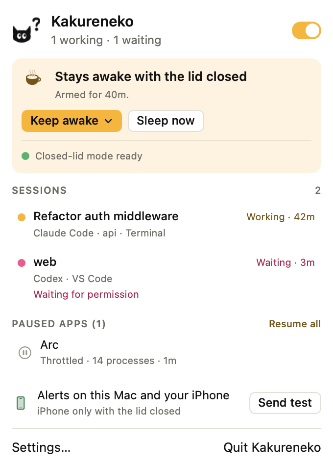
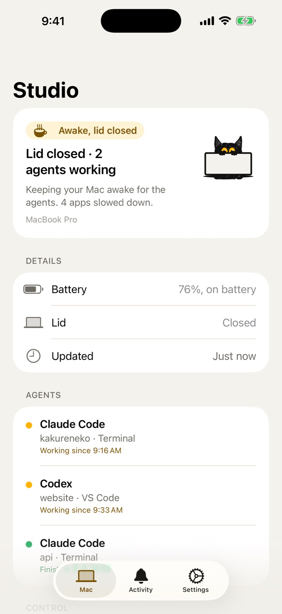
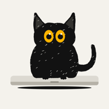
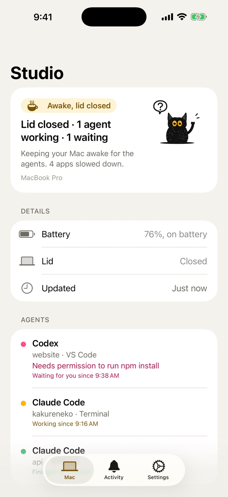
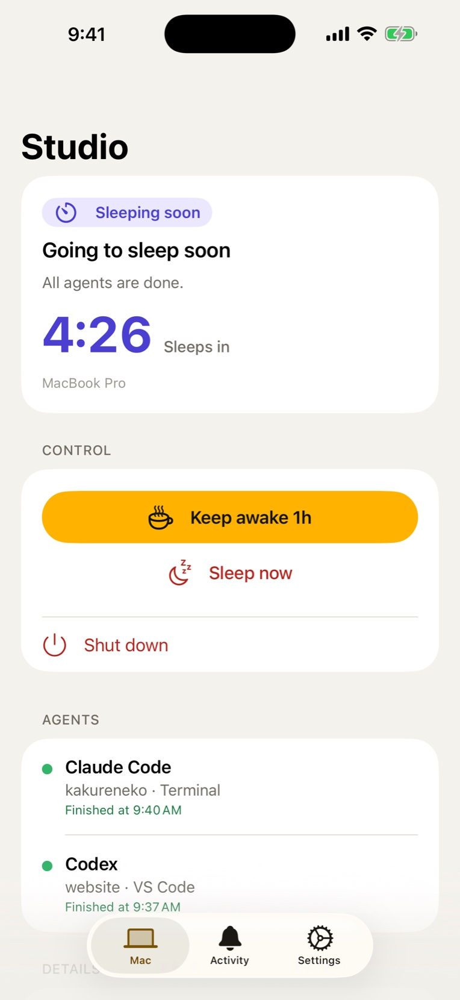
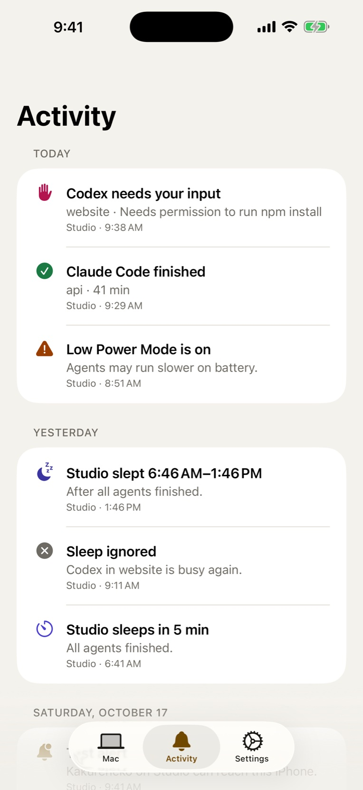
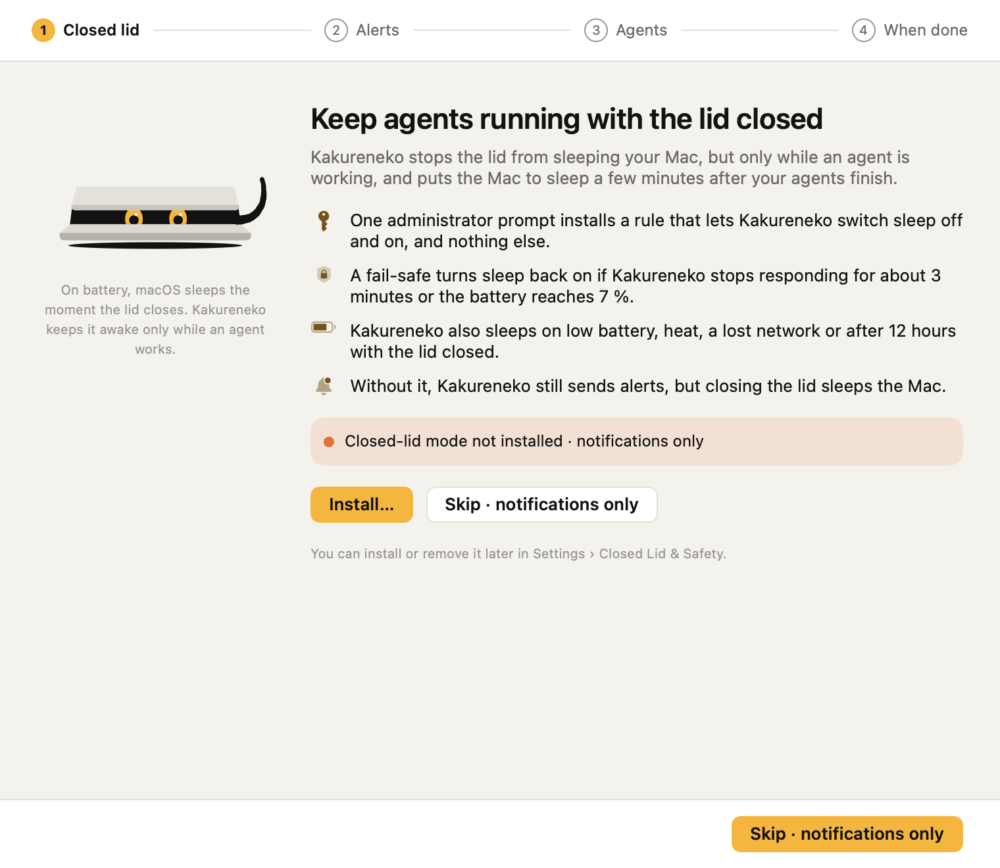
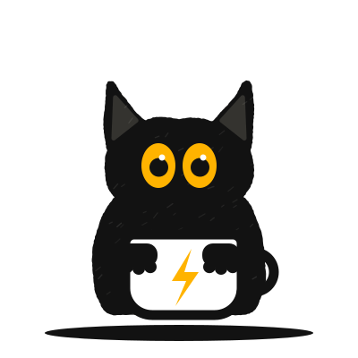

Close the lid. Your agents keep working.
While Claude Code, Codex or another coding agent works, Kakureneko keeps your Mac awake, even with the lid closed. When they're done, it lets the Mac sleep again, and your iPhone tells you.


Coding agents work for hours. Your Mac falls asleep the moment you close the lid. Kakureneko keeps it awake while they work, lets it sleep when they're done, and tells your iPhone what happened.
Everything in one menu.
Every agent session, what it's doing and for how long. Whether the Mac will stay awake with the lid closed. Which apps were slowed down to save the battery. One click to keep it awake longer, or sleep now.
- Working
- Waiting for you
- Paused apps
Close the lid and go.
While an agent works, the Mac stays awake with the lid closed. Other apps are slowed down so the battery lasts, and your iPhone shows what the Mac is doing: each agent, the battery, the lid.
- Stays awake only while agents work
- Slows other apps on battery
Know when an agent needs you.
A permission, a question: your iPhone tells you which agent is stuck and on what. These alerts are Time Sensitive, so they get through Focus. Keep awake holds the Mac for an hour while you get to it.
- Time Sensitive
- Keep awake 1h
- Sleep now



Keep it awake, or let it sleep.
With the lid closed, the Mac sleeps five minutes after the last agent finishes. Before it does, you get a countdown, with Keep awake and Sleep now right on the alert and in the app.
- Keep awake
- Sleep now
- Shut down, if you allow it

The last three days, in one list.
Every alert from your Macs, grouped by day: who finished and how long it took, who waited, when the Mac slept. Several Macs on one Apple Account show up side by side.
- Finished
- Needs you
- Slept

How it works
Set it up once, then just close the lid.
-
Install closed-lid mode
Open Kakureneko and approve one administrator prompt. It lets the app switch sleep off and on, and adds a fail-safe that switches it back on.
-
Connect your agents
Kakureneko adds a small hook to each agent's settings, so it knows when one starts, waits or finishes. You see every change before it's made.
-
Close the lid and go
While an agent works, the Mac stays awake. Other apps are slowed down so the battery lasts.
-
It sleeps when they're done
Five minutes after the last agent finishes. If an agent is waiting for you instead, your iPhone tells you first.

Kakureneko, the hiding cat
隠れ猫 is Japanese for "hiding cat". Soot keeps watch behind the closed lid.
Careful by default
Awake, but not at any cost.
A closed Mac in a bag gets warm and runs flat. Kakureneko stops before that happens.
- 20 %
- Battery at which it lets the Mac sleep. You can set 10–50 %.
- 12 h
- Longest it keeps the Mac awake with the lid closed.
- 3 min
- If the app stops answering, a system service turns sleep back on.
- 7 %
- Battery at which sleep comes back on, whatever else is going on.
Safety stops
It also sleeps when the Mac runs hot, or when the network has been gone for 15 minutes.
A reminder on the lid
Close the lid on battery and it plays a sound: a reminder not to put a running Mac in a bag.
Never the wrong app
Apps that run or talk to an agent, play audio or download are never slowed down.
iPhone app
No pairing. No account.
Use the same Apple Account on your Mac and iPhone, and they find each other through iCloud. Several Macs show up side by side.
Privacy
No server of our own.
Your Mac and iPhone talk through Apple's iCloud. Other iCloud users can't read what they send, and alerts are deleted after three days. No analytics, no tracking, no ads.
Requirements
What you need.
- A Mac
- macOS 26 or later, on Apple silicon or Intel. Closed-lid mode is for MacBooks and needs an administrator password once.
- A coding agent
- Claude Code, Codex, Gemini CLI, Cursor, Copilot CLI, opencode, Aider, Windsurf, Antigravity, Factory Droid, Qwen Code and others. Agents without a hook are recognised from their processes.
- An iPhone (optional)
- iOS 18 or later, signed in to the same Apple Account as the Mac, with iCloud on.

Let the agents work late.
Download Kakureneko for Mac, then get the iPhone app if you want alerts on the go.